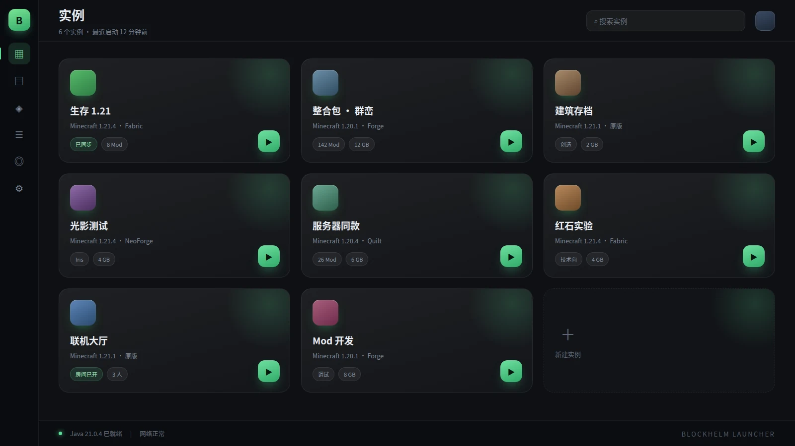

首页卡片随手排
长按账号、启动、版本任意一张卡片，拖到想要的位置；松手落位，顺序记进设置里。
每一样都为了少点两下鼠标。装好、选版本、进游戏。
长按账号、启动、版本任意一张卡片，拖到想要的位置；松手落位，顺序记进设置里。
生存、创造、整合包各自独立目录，Forge 与 Fabric 版本并存，改坏一个不影响另一个。
联机页拆成两栏：陶瓦联机分创建与加入，红石联机直连第三方中继。切换只要一下。
直接读仓库的 Releases，比对版本后下载、校验 sha256、替换程序并重启，全程不用离开启动器。
简体中文、繁體中文、English、日本語，跟随系统或手动指定，切换即时生效。
黑白主题在主界面直接切，强调色可自定义，连视频背景的音量都能单独调。
不用切窗口去问别人。启动器怎么用、崩了怎么查、这个 Mod 为什么要前置，直接问它。
latest.log 末尾，闪退原因通常直接写在最后几十行。Missing dependencies，缺前置最常见。启动器自带离线知识库：Java 版本对照、内存怎么分、Mod 冲突怎么二分、整合包怎么装，断网照样答。
填一个兼容 OpenAI 协议的地址就行：DeepSeek、通义千问、Kimi、智谱、硅基流动，或者本机跑的 Ollama。
对话会自动带上启动器版本、Minecraft 目录、默认内存，回答贴着你的实际配置走，不给通用废话。
接口地址、Key、模型名存在本地 settings.json 里，不上传、不统计，随时可以清空对话。
下面全是启动器界面截图，点缩略图就能切换。
深色科技调，画面取的是真机界面与 Cubi 的实际对话流程。点开即播，默认静音。
BlockHelm Launcher 使用了本项目的界面组件与交互规范，下面是它的实例管理界面。

第三方开源项目 BlockHelm Launcher 面向 Minecraft Java 版的现代化启动器，把游戏安装、实例管理、账户登录、资源安装与联机收在同一个界面里。 github.com/zqq-699/BlockHelm-Launcher当前版本 1.2.2，发布于 2026-11-08。 全部从 GitHub Releases 直连，浏览器可能提示下载风险，请自行确认后保留。
Windows 10 1809 及以上 / Windows 11，x64。框架依赖版需先装 .NET 8 Desktop Runtime。
GitHub 访问不畅时，可用 Gitee 镜像 或直接到 Releases 页面 手动挑文件。
红石联机由第三方提供，见 hongshi.site， 与本启动器无隶属关系。
以下内容直接读取仓库 Releases，和启动器里看到的完全一致。
20.3 MB，没有安装向导，没有捆绑。